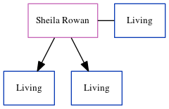

Sheila M Cowell (née Rowan)
[ Home ] | [ Calendar ] | [ Surnames Index ] | [ Census Index ] | [ Family History ]Sheila Rowan, the wife of Brian H Cowell (the cousin on the mother's side of Nigel Horne), and married Brian (with whom she had 2 surviving children Mark William and Paul Stephen) in St Peters, Thanet, Kent, England on Mar 14, 19641.
Citations
- England & Wales, Marriage Index: 1916-2005 Online publication - Provo, UT, USA: The Generations Network, Inc., 2009.Original data - General Register Office. England and Wales Civil Registration Indexes. London, England: General Register Office. © Crown copyright. Published by permission of the Cont
Media
England & Wales marriages 1837-2008 - BMD/M/1964/1/AZ/000233/116
Family Tree
Generated by ged2site. Last updated on Jun 11, 2024